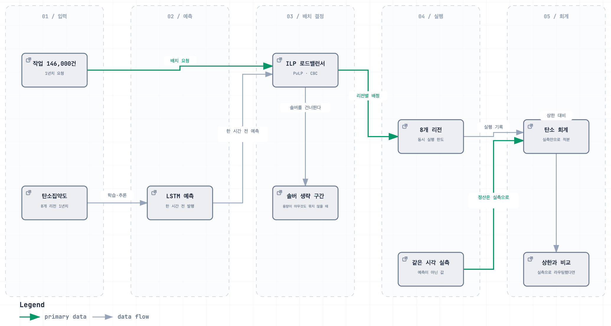

CAST — 탄소 인식 클라우드 스케줄러
전기가 깨끗한 시간대로 작업을 옮긴다
Impact
- 5종선행연구를 직접 구현해 자기 결과와 나란히 비교 (1,122줄)
- 933줄한 명령으로 표·그림·스윕을 통째로 재생성하는 재현 하네스
- 56.7%본인 담당 ILP 로드밸런서 단독 탄소 절감 (시뮬레이션)
Background
같은 연산이라도 어느 지역에서 몇 시에 돌리는지에 따라 배출되는 탄소가 달라집니다. 전력 구성이 지역마다, 시간대마다 바뀌기 때문입니다.
급하지 않은 작업을 전기가 깨끗한 리전·시간대로 옮겨 배출을 줄이는 스케줄러입니다. 4인 팀에서 작업을 어느 리전으로 보낼지 결정하는 로드밸런서를 맡았습니다 — load_balancer/의 96%가 제 코드입니다(탄소강도를 예측하는 LSTM 모델은 팀원 담당). 1년치 실데이터로 돌린 시뮬레이션이며 실제 클라우드에 배포하지는 않았습니다.
Architecture

Contributions
배정을 정수최적화 문제로 세웠다
슬롯마다 들어온 작업 묶음을 8개 리전에 배정하는 문제입니다. 목적함수는 탄소강도와 네트워크 지연을 정규화해 가중합한 값(min Σ (α·M̃ + (1−α)·l̃)·x)이고, 제약은 리전별 동시 실행 한도와 전량 처리입니다. 어느 리전에도 넣을 수 없는 작업이 생기면 해가 없어지므로, 미배정을 허용하는 변수를 따로 두고 비용을 물렸습니다. 솔버는 PuLP/CBC를 씁니다.
ILP를 항상 돌리지 않는다
1년치를 전부 돌려야 하는 실험에서는 슬롯마다 솔버를 부르는 비용이 그대로 실험 시간이 됩니다. 모든 리전의 가용량이 배치 크기보다 크면 용량 제약이 아무 작업도 묶지 않으므로, 각 작업이 독립적으로 가장 싼 리전을 고르는 것이 곧 최적해입니다. 이 경우를 판별해 솔버를 건너뛰고 최솟값 선택으로 처리했습니다. 최적성을 포기한 근사가 아니라 같은 답이 보장되는 구간만 지름길로 뺀 것입니다.
예측으로 옮기고 실측으로 정산한다
라우팅은 LSTM이 1시간 전에 발행한 예측값으로 결정하고, 탄소 회계는 같은 시간의 실측값으로만 계산합니다. 양쪽에 같은 예측값을 쓰면 예측이 잘 맞은 것이 감축량으로 둔갑합니다. 코드에서도 예측 계열과 실측 계열을 분리해 들고 있고, 예측 대신 실측으로 라우팅한 경우를 상한(perfect forecast)으로 따로 돌려 비교합니다.
가중치를 사람이 고르지 않게 했다
탄소와 지연은 맞바꾸는 관계라 α를 얼마로 두느냐가 결과를 바꿉니다. 하나로 고정하면 그 숫자를 고른 사람에게 결과가 달려 있습니다. α 후보를 0.1 간격 11개로 두고 매 슬롯 파레토 곡선의 무릎점(더 이상 싸게 얻어지지 않는 지점)을 자동 선택하게 했습니다. 0.05 간격 대비 슬롯당 연산이 절반이면서 무릎점을 찾는 데는 충분합니다.
한 리전으로 쏠리지 않게 막았다
가장 깨끗한 리전으로 전부 몰면 숫자는 좋아지지만 결과가 현실과 멀어집니다. 리전 용량을 원래 배정의 최대 동시 실행 수에서 산정하고 거기에 여유를 더 남겨(headroom) 쏠림을 완화했습니다.
결과 (시뮬레이션)
8개 리전(미국 3 · 프랑스 · 독일 · 한국 · 인도 · 일본) · 146,000건 1년치 실데이터입니다. 팀 전체 구성에서 탄소 56.9% 감소, 지연 36.2 ms 증가. 제가 맡은 ILP 로드밸런서만 단독으로 적용했을 때는 56.7%입니다. 두 값이 가까운 것은 감축의 대부분이 리전 이동에서 나온다는 뜻이기도 합니다. 라우팅 결과는 스케줄러가 받아 쓰는 산출물로 따로 내보냅니다.
Troubleshooting
감축량이 실제보다 좋게 나왔다
- 문제
- 초기 구성에서는 감축 효과가 과하게 잡혔습니다.
- 원인
- 작업을 옮길 때 쓴 예측 탄소강도로 감축량까지 계산하고 있었습니다. 예측이 틀린 만큼이 그대로 감축으로 들어갑니다.
- 해결
- 라우팅 결정과 탄소 정산의 입력을 분리했습니다. 정산은 해당 시간의 실측값만 쓰고, 예측으로 라우팅한 경우와 실측으로 라우팅한 경우를 나란히 돌려 예측 품질이 결과에 얼마나 기여했는지를 따로 볼 수 있게 했습니다.
- 결과
- 위 수치는 이 분리 이후의 값입니다. 최적화 결과를 보고할 때 어떤 숫자로 계산했는지가 결과 자체만큼 중요하다는 것을 배웠습니다.